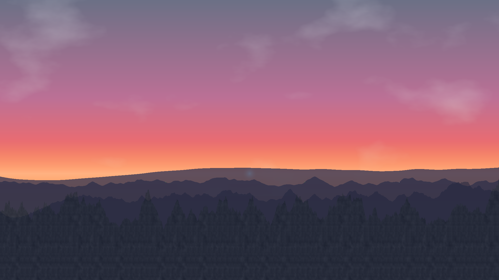

The Motive
The initial goal of this project was to explore the intersection of art and technology. Starting with a beautiful, real-world photograph of a sunset over a mountain range, the challenge was to programmatically recreate its essence. The motive was not to create a perfect pixel-for-pixel copy, but to capture the mood, color palette, and composition using procedural generation techniques in Python. This involves breaking down a natural scene into its fundamental components—light, color, shape, and texture—and rebuilding it through algorithms.
The Achievement
The result is a fully automated script that generates a unique and aesthetically pleasing landscape image. The Python script successfully layers multiple procedural elements to create a cohesive scene:
- A dynamic, multi-color sky gradient that simulates a sunset.
- A glowing sun and soft, wispy clouds generated with Perlin noise.
- Multiple layers of mountains with atmospheric perspective.
- Textured foreground details and tiny, distant structures that add a sense of scale.
This final image, generated entirely from code, stands as the achievement: a successful translation of a natural scene into a procedural masterpiece.
